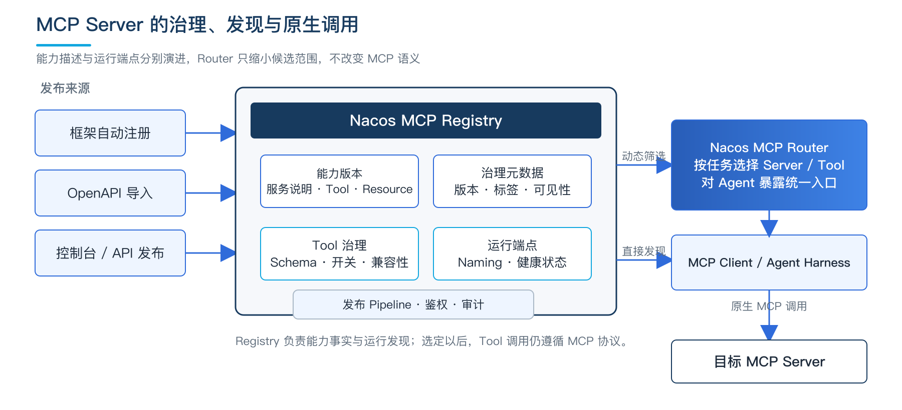
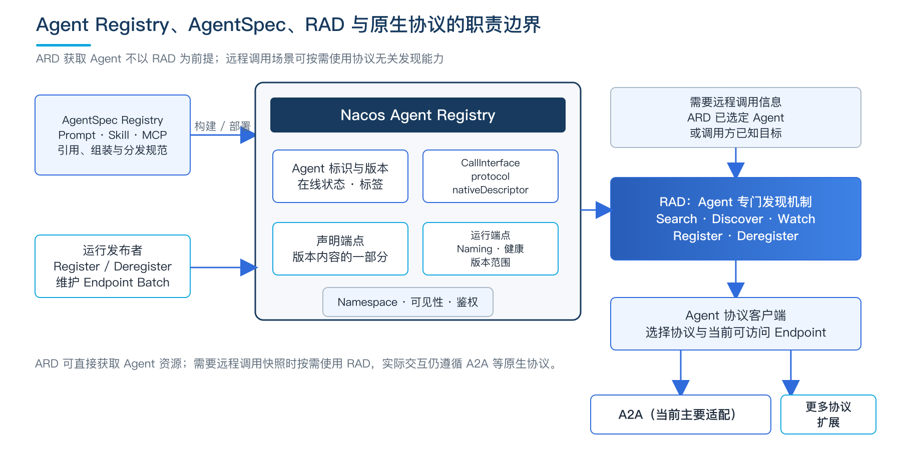
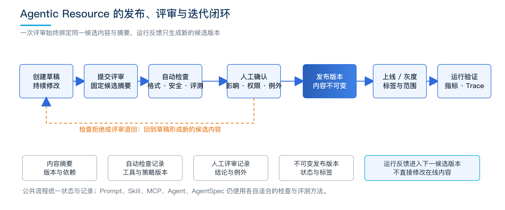
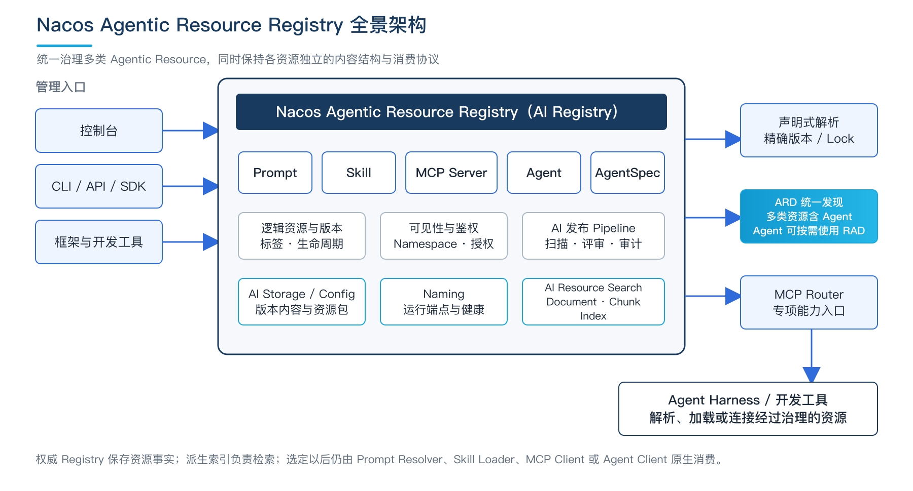
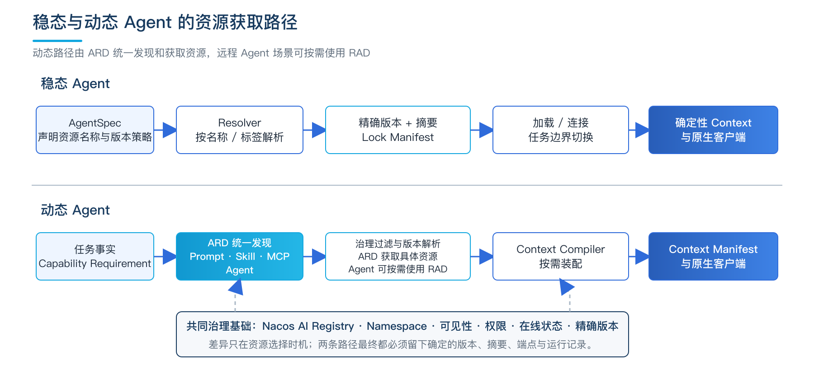
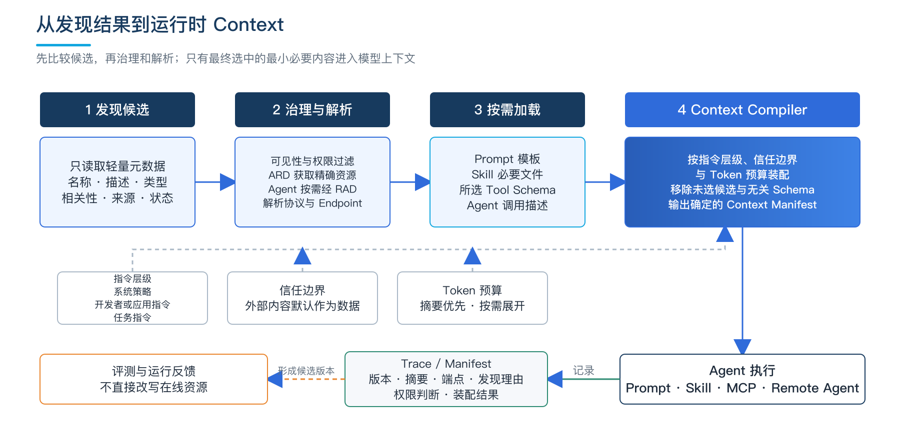

第 15 章 AI 资产的发现与管理¶
Agent 的行为不只取决于模型。模型在一次调用中看到哪些指令、可以使用哪些方法、能够连接哪些外部能力，以及最终获得怎样的上下文，都会改变任务的执行过程和结果。第 4 章从 Harness 视角讨论了指令与上下文的动态装配，第 5 章进一步区分了 Prompt、Skill、Knowledge 和 Memory 等 Agent 能力资产。
当 Agent 数量、参与团队和运行环境逐步增多，这些能力资产会从单个应用中的局部内容，演变为被多个 Agent 共同依赖的公共资源。Prompt 可能被复制到不同代码仓库，Skill 可能散落在多个本地目录，MCP Server 的工具说明和运行端点可能分别维护，能够协作的 Agent 也可能由不同平台发布。此时，团队不仅要知道资源保存在哪里，还要回答哪个版本可以使用、一次任务实际使用了什么、一次变更会影响哪些 Agent，以及运行中如何找到当前任务需要的能力。
不同资源需要管理的内容并不相同。Prompt 的核心是指令、模板和变量；Skill 是包含执行说明、脚本和参考资料的能力包；基于 Model Context Protocol（MCP）的服务对外提供工具、资源和运行端点；Agent Registry 则描述可以被发现和调用的 Agent。它们可以共用名称、版本、生命周期、可见范围和发布记录，但不能因此忽略各自的验证方法和运行方式。
本章先分别讨论 Prompt、Skill、MCP 和 Agent Registry 的工程管理，再说明各类能力资产如何进入统一的变更评审和发布流程。在此基础上，进一步介绍资源中心的公共治理能力，说明稳态 Agent 如何通过声明式依赖获取资源，动态 Agent 如何借助 Agentic Resource Discovery（ARD）和 Remote Agent Discovery（RAD）按任务发现能力。最后讨论发现结果如何进入运行时 Context，并通过完整记录支持回放、问题分析和持续改进。
本章将承载 Agentic Resource 注册、版本、治理、发现和分发的基础设施称为 Agentic Resource Registry，并以 Nacos 作为贯穿全章的参考实现。Nacos 官方产品能力称为 AI Registry 或 AI 管理中心；本章使用 Agentic Resource Registry，是为了强调它管理的不是一种普通配置，而是 Agent 在运行中可以发现、加载或调用的 Prompt、Skill、MCP Server、Agent 和 AgentSpec。
这一定位延续了 Nacos 从 Config、Naming 向 AI Registry 的演进：配置中心回答应用怎样运行，服务发现回答服务实例在哪里，AI Registry 则回答 Agent 当前有哪些经过治理的能力可以使用。以下内容仍先说明可迁移的工程原则，再结合 Nacos 的资源模型、生命周期、客户端与发现组件解释这些原则如何落地。本章以 Nacos 3.3 版本线为实践基线：ARD 已将按意图发现扩展到 Prompt、Skill、MCP Server 和 Agent，协议无关的远程 Agent 发现能力也已初步完成；对于仍在演进的协议细节，则明确其当前范围，不把后续扩展写成既成事实。
本章只展开与能力资产直接相关的验证和运行约束。通用的应用、模型、数据、身份及基础设施安全由第 14 章讨论；灰度流量组织和 A/B Test 方法由第 15 章讨论；运行指标的采集与 Trace 基础由第 13 章讨论。
15.1 Prompt 工程化：模板、版本、评测与回滚¶
在原型阶段，Prompt 经常以代码字符串、配置项或文档片段的形式存在。随着同一 Prompt 被多个 Agent 复用，文本之外的变量、模型、工具和输出要求也会成为运行条件。如果只保存一段最终文本，团队很难判断一次修改是否改变了调用接口，也无法稳定地比较新旧版本的行为。
15.1.1 从文本片段到结构化模板¶
一项可发布的 Prompt 应被表示为结构化内容，而不只是完整字符串。其基本组成可以包括：
| 组成部分 | 主要内容 | 管理重点 |
|---|---|---|
| 指令层 | 系统策略、开发者或应用指令、任务指令等不同层级的内容 | 来源明确、顺序稳定，低优先级内容不能覆盖高优先级规则 |
| 模板与变量 | 模板正文、变量名称、类型、是否必填、默认值和长度限制 | 防止缺失变量、类型错误和未处理输入改变指令结构 |
| 输入输出要求 | 输入范围、输出格式、结构化 Schema 和异常处理方式 | 便于调用方校验，也用于判断版本兼容性 |
| 运行依赖 | 适用模型、所需工具、知识来源和语言环境 | 避免 Prompt 被加载到不具备相应能力的 Agent |
| 验证材料 | 正向样例、边界样例、评测集和评价标准 | 支持发布前评测和历史版本比较 |
结构化建模不要求每项 Prompt 都采用复杂格式。对于没有变量的短 Prompt，正文仍然可以是主体；资源中心至少需要知道它的指令层级、适用范围和输出要求。对于包含模板变量的 Prompt，则应使用明确的变量 Schema，使调用方可以在渲染前检查名称、类型和取值范围。
变量替换应在受控的渲染过程中完成。用户输入、检索结果和工具返回值作为数据进入指定位置，并经过长度、类型和必要的转义处理，不应先与模板随意拼接，再交由模型判断哪些内容属于指令。这样既能减少模板错误，也能降低外部内容改变原有指令边界的风险。
Prompt 与模型、工具之间的关系也需要显式记录。例如，一项 Prompt 要求模型调用 query_order 工具并按指定 JSON Schema 输出结果，那么工具名称、参数定义和输出 Schema 都构成运行条件。缺少这些依赖时，即使 Prompt 正文完整，也不能认为它可以正常运行。
15.1.2 版本与变更分类¶
Prompt 的每一次已发布变更都应形成新版本。版本记录除了正文差异，还应包含修改原因、变量 Schema、输出格式、适用模型、工具依赖、评测结果和受影响的 Agent。
从发布影响看，Prompt 变更可以分为三类：
| 变更类型 | 典型内容 | 主要影响 |
|---|---|---|
| 文字修订 | 修正错误、补充说明或改善表达 | 预期不改变任务目标和输出结构，但仍需通过评测确认 |
| 接口变化 | 增加必填变量、修改输出 Schema、调整工具名称或依赖条件 | 直接影响调用方适配与兼容性 |
| 行为变化 | 改变判断规则、处理步骤、拒绝范围或结果偏好 | 即使输入输出形式不变，也可能改变 Agent 的实际行为 |
这种分类帮助评审者理解风险，但不能代替实际评测。自然语言的细微调整也可能改变模型输出，因而难以仅凭传统的主版本、次版本和修订版本推断兼容性。版本号首先承担唯一标识作用，行为是否可以接受仍需结合评测结果和人工判断。
被多个 Agent 共同使用的 Prompt 还需要维护反向引用关系。发布前应能够查看现有使用方、生产环境的绑定方式和历史调用规模，确定哪些 Agent 需要提前适配，哪些场景可以进行小范围验证。
15.1.3 Prompt 评测¶
Prompt 评测需要同时观察结构是否正确、任务效果是否变化以及运行约束是否满足。结构检查关注变量是否完整、输出能否通过 Schema 校验、引用工具是否存在；任务评测使用固定样例比较新旧版本的准确性、完整性、拒绝行为和边界表现；运行评测则关注延迟、Token 消耗以及模型和工具版本变化带来的影响。
同一评测集在不同模型上可能得到不同结果，因此评测记录必须与 Prompt 版本、模型版本、推理参数、工具定义和评测集版本关联。只记录一个总分，无法说明结果变化来自 Prompt 修改还是运行环境变化。
评测集应包含常见任务、边界输入和历史问题样例。对于结构化输出，应单独统计格式通过率；对于包含判断规则的 Prompt，应观察不同类别的错误分布，而不只看平均分。高风险场景还需要人工抽查具体输出，确认自动指标没有掩盖业务上不可接受的变化。
评测结果是变更评审的输入，而不是自动发布指令。资源作者仍需说明修改目的、预期改善和已知限制，评审者结合影响范围决定是否允许进入后续发布阶段。统一评审流程将在 16.5 节展开。
15.1.4 发布、灰度与回滚¶
对结果确定性要求较高的 Agent，可以固定 Prompt 的精确版本，并通过正常发布流程升级；需要集中维护的 Agent，则可以绑定组织自定义的 stable、canary 等标签，由平台统一调整标签指向。
新版本通常先在测试环境完成离线评测，再进入限定 Agent、租户或流量范围的小规模验证。确认质量、延迟和成本符合预期后，才将稳定标签移动到新版本。历史版本内容始终保持不变，变化的是标签与版本之间的指向关系。
灰度范围需要结合业务关系划分。Prompt 如果修改了输出字段，而调用方尚未完成适配，即使只影响少量随机请求，也可能造成完整链路失败。第 15 章已经介绍灰度和 A/B Test 的流量组织及分析方法，本节只负责明确参与试验的 Prompt 版本和恢复目标。
当新版本出现质量或安全问题时，可以把标签重新指向最近一个已验证版本。回滚操作应记录原因、执行人、影响范围和相关运行记录。已经开始的长任务不宜在执行中自动更换 Prompt；较稳妥的方式是在任务或会话开始时解析一次版本，并在该执行边界内保持不变。
15.1.5 可复现的有效 Prompt¶
资产库中保存的是 Prompt 模板，模型实际接收到的却是模板经过变量渲染、上下文装配和运行策略处理后的结果。即使模板版本相同，变量取值、模型版本、工具说明或检索内容不同，最终输出也可能不同。
可以将一次调用中实际生效的组合称为“有效 Prompt”：
有效 Prompt = Prompt 版本 + 变量快照 + 模型与参数
+ 工具定义版本 + 策略版本 + Context 来源
运行系统应为这一组合生成可查询的指纹，并保存各组成部分的精确版本或内容摘要。包含敏感数据的变量可以记录经过保护处理的值、摘要或引用位置，不必复制全部原文；但记录方式应能够判断两次执行是否使用了相同条件。
有效 Prompt 记录最终进入 Context Manifest。借助这些信息，团队才能在结果偏离预期时判断问题来自 Prompt 变更、模型升级、变量错误，还是其他上下文发生了变化。
15.1.6 Nacos Prompt Registry 的实现路径¶
Nacos Prompt Registry 将 Prompt 建模为一等版本化资源，而不是把它隐藏在普通配置项中。资源以 namespaceId -> prompt -> promptKey 唯一标识，版本中保存模板、变量定义、作者、提交说明和描述等信息。Namespace 可以区分环境、租户或业务域，稳定的 promptKey 则使多个应用能够引用同一项业务 Prompt。
应用可以按精确版本读取，也可以通过服务端维护的 latest 或组织自定义标签（如 stable、canary）取得当前推荐版本。标签在查询时解析，因而 Prompt 内容可以独立于应用代码发布；与此同时，运行记录仍需保存解析后的精确版本，避免只留下后来可能移动的标签。
在管理侧，Prompt 可以遵循 Nacos AI 资源的通用生命周期：先创建和修改草稿，再提交审核，通过发布 Pipeline 后发布并上线。已经上线的版本保留历史内容，后续修改形成新版本。团队因此可以集中查看变更记录、比较版本、调整标签并恢复到已验证版本，而不必依赖分散在各代码仓库中的字符串差异。
Nacos 解决的是 Prompt 模板的权威版本、发布状态和运行时获取问题。一次调用中的变量取值、模型参数、工具说明和检索内容仍由 Agent Harness 负责装配，并通过 Context Manifest 与 Nacos Prompt 版本建立关联。区分这两个层次，既能发挥动态管理的价值，也不会把“模板相同”误认为“最终输入完全相同”。
15.2 Skill 的验证与发布：从沉淀到可发布资产¶
Skill 用于表达 Agent 完成一类任务的方法。它既可以包含可阅读的执行说明，也可能携带脚本、模板、参考资料和外部依赖，并通过 Agent 已有的工具产生实际操作。因此，Skill 的管理对象应是完整能力包，而不是其中一份说明文件。
15.2.1 Skill 包与发现信息¶
不同 Agent 或 Harness 可以使用各自的 Skill 目录格式，但进入团队资源中心的 Skill 至少应具备一致的描述层。一个典型能力包可以采用如下结构：
complaint-analysis/
├── SKILL.md # 使用说明、执行步骤与注意事项
├── manifest.yaml # 标识、发现信息、依赖和权限声明
├── scripts/ # 可选的辅助脚本
├── templates/ # 可复用模板
├── references/ # 按需加载的参考资料
├── tests/ # 样例、校验规则或测试脚本
└── LICENSE # 来源与使用许可
SKILL.md 主要面向 Agent 或开发者说明何时使用、如何执行和如何处理异常；Manifest 为资源中心提供稳定、可校验的结构化信息。Manifest 中应包含逻辑名称、版本、维护者、能力描述、触发条件、输入输出、兼容运行环境、依赖、所需工具、权限范围、资源限制、来源和许可证等内容。
包中存在脚本时，还应明确入口、解释器或运行时版本、依赖包及其锁定信息。存在参考资料时，应说明哪些内容需要在开始任务时加载，哪些内容只在特定步骤中读取，避免把整个目录一次放入 Context。涉及外部系统时，应声明所需工具或连接能力，访问凭据不能保存在 Skill 包中。
Skill 是否容易被发现，取决于其描述能否准确表达能力边界。名称“数据分析助手”过于宽泛，既不利于人工查找，也容易在语义检索中匹配无关任务。更有效的描述应说明它解决什么任务、需要什么输入、产生什么结果，以及哪些情况不适用。
除名称和简要说明外，发现信息通常还包括适用场景、代表性用户问题、业务标签、输入输出类型、兼容的 Agent 或 Harness、依赖工具、风险等级和所需权限。发现元数据本身也是发布内容的一部分，发生实质变化时同样需要评审和版本记录。
15.2.2 版本、依赖与分发¶
Skill 一经发布，其包内容和依赖锁定信息不应被覆盖。新增脚本、修改执行步骤、调整权限要求或更新依赖，都需要形成新版本，并重新计算完整包摘要。只对 SKILL.md 计算摘要会漏掉脚本、模板和依赖文件的变化，因此摘要应覆盖完整能力包。
版本兼容性不能只看说明正文。例如，新版本把脚本运行时从 Python 3.10 提升到 3.12，或者开始依赖生产环境未开放的工具，即使输入输出不变，现有 Agent 也可能无法使用。发布前应根据 AgentSpec 或运行环境检查依赖条件，并给出明确的解析结果。
对于依赖其他 Skill 的能力包，应声明版本范围或精确版本，并在部署或加载时生成锁定清单。运行记录最终保存实际解析出的每一项版本和摘要，避免上游标签移动后，下游 Skill 在未发布新版本的情况下改变行为。
个人或单机环境可以使用统一目录和同步工具，使多个 Agent 从同一份本地内容加载；团队及跨设备环境则适合使用远程 Registry，统一提供搜索、下载、版本解析、订阅通知和使用记录。无论采用哪种方式，同一版本号都应对应相同摘要。
15.2.3 验证与发布¶
Skill 提交发布后，应先验证包结构、依赖和实际行为。结构检查确认必需文件、Manifest 字段、脚本入口和摘要计算是否正确；依赖检查确认运行时、第三方组件和所需工具是否满足条件；任务验证则在受控环境中执行代表性样例，观察输出、外部访问和异常处理是否符合说明。
包含脚本的 Skill 还应检查危险命令、敏感路径访问、运行时下载、混淆内容和已知依赖漏洞。自然语言说明同样需要检查，识别诱导 Agent 忽略既有规则、读取无关数据或扩大操作范围的内容。自动检查发现问题后，应返回明确原因，由作者回到草稿修正，而不是由检查系统直接修改待发布内容。
验证通过并不表示版本已经自动适用于所有环境。业务负责人还需确认能力边界、使用场景和维护责任；风险较高的 Skill 由相关人员确认必要权限和外部连接。版本完成发布后，再通过在线状态、可见范围和标签确定哪些 Agent 可以发现和下载。
普通废弃表示不再推荐新 Agent 使用，但可以为存量任务保留迁移时间；停止分发表示不再接受新的安装或解析；因明确安全问题撤回时，则应阻止新加载，并通知仍在使用的 Agent 和负责人。
15.2.4 外部 Skill 的可信准入¶
外部 Skill 会把外部维护者、代码依赖和内容来源带入 Agent 运行环境。由于 Agent 可能按照自然语言说明调用文件、命令、工具和外部服务，一段普通说明也可能间接引导高权限操作。外部 Skill 因而不能下载后直接进入生产 Agent。
企业可以设置独立的接收区域。新内容先作为候选包保存，不对生产 Agent 可见；完成检查并形成内部版本后，才允许通过正常资源解析流程获取。一个完整的准入过程通常包括：
| 阶段 | 主要工作 | 形成的记录 |
|---|---|---|
| 来源核实 | 记录原始仓库或发布地址、发布者、维护状态、许可证和获取时间 | 来源与责任信息 |
| 完整性校验 | 计算候选包摘要，并在来源提供签名时验证签名 | 内容摘要与签名验证结果 |
| 静态检查 | 检查说明、脚本、依赖和配置中的异常命令、敏感路径、外部地址、运行时下载、依赖漏洞和不当指令 | 检查工具、策略版本和问题清单 |
| 隔离验证 | 在不包含生产数据和长期凭据的环境中执行样例任务，限制文件、进程、工具和网络访问 | 运行行为和外部访问记录 |
| 人工评审 | 由使用团队确认业务必要性、输入输出、维护责任和必要权限 | 评审结论与例外事项 |
| 内部发布 | 将通过检查的内容复制到内部 Registry，固定版本和摘要 | 内部版本及其完整准入记录 |
签名和摘要能够证明内容来自谁、检查后是否被替换，但不能证明内容本身没有风险。静态检查能够识别已知模式，却难以穷尽自然语言指令在不同 Agent 中可能产生的行为。可信准入需要把来源核实、内容检查、隔离验证和运行限制结合起来，而不能依赖某一项单独结论。
15.2.5 运行时限制与持续处置¶
通过准入检查的 Skill，运行时仍不应继承 Agent 的全部能力。系统需要根据当前任务重新授予必要权限，并使实际权限不超过 Manifest 声明范围。只负责整理本地 Markdown 的 Skill，不应因为所在 Agent 具备云端管理能力，就同时取得外部网络和生产系统访问权限。
对不需要联网的 Skill，可以默认禁止外部网络；确有需要时，只开放指定服务和必要方法，并对请求数据进行敏感信息检查。文件访问限定在任务目录或明确数据集，系统配置、密钥目录和其他项目文件保持不可见。访问外部服务时使用短期、最小权限的凭据，由运行环境注入，而不是写入包内容或 Context。
外部 Skill 在发布后仍可能出现新的风险：上游披露安全问题、依赖组件出现漏洞、组织策略变化，或者运行记录显示其行为与声明不一致。内部 Registry 需要支持定期重新检查，并使检查结论同时关联 Skill 摘要、依赖摘要、检查工具版本和策略版本。
确认存在风险后，资源中心首先停止该版本的新安装和新解析，再根据严重程度通知使用方、停止新任务加载或中止运行实例。平台通过反向引用关系列出受影响的 Agent、环境和历史任务，帮助负责人迁移到安全版本。更广泛的网络、身份、数据和运行环境安全要求见第 14 章。
15.2.6 Nacos Skill Registry：企业内部的能力仓库¶
Nacos 从 3.2.0 开始提供 Skill Registry。它以 SKILL.md 和附属资源文件为基本内容，可以通过控制台手工创建、上传 ZIP 包或使用辅助生成能力形成草稿。Skill 发布后，开发者和 Agent 工具链可以通过 CLI、API 或 SDK 搜索、下载和安装，从而把个人目录中的能力沉淀为团队可共享的内部资产。
每个 Skill 版本经历 draft、reviewing、online 和 offline 等状态。上线版本内容不可直接修改，需要从已有版本创建或 Fork 新草稿，再重新审核和发布。版本标签、业务标签以及 PUBLIC、PRIVATE 可见范围分别解决推荐版本、分类检索和使用范围问题；运行时最终下载的是具有确定版本和内容的 Skill 包。
Nacos 的发布 Pipeline 可以在 Skill 上线前接入安全扫描。内置 skill-scanner 节点可以调用外部扫描工具，对可扫描内容执行检查；组织也可以扩展自己的审核节点。Pipeline 的意义不是宣称 Skill 已经绝对安全，而是让扫描工具、检查结果和发布版本进入同一条可审计流程。Skill 加载后的文件、进程、网络和工具权限仍由 Runtime 与沙箱控制。
作为私有 Skill Registry，Nacos 的价值还在于形成统一来源。团队可以把来自公共仓库或外部市场的 Skill 先导入内部，完成来源核实、扫描和人工确认后，再以内部版本分发。Agent 不再直接依赖可能随时变化的外部地址，发现和安装也可以统一服从 Namespace、可见范围和版本状态。
15.3 MCP 管理：从服务登记到工具发现与调用¶
MCP 为 Agent 连接外部工具和数据提供了通用方式，但“能够连接”并不等于“能够管理”。当企业拥有大量 MCP Server 时，需要知道每个服务提供哪些能力、由谁维护、哪些端点正在运行、工具定义是否发生变化，以及哪些 Agent 有权发现和调用。将 MCP Server 只保存为客户端配置中的一组地址，无法回答这些问题。
MCP 管理的核心，是把相对稳定的能力定义、可以独立发布的版本和持续变化的运行端点分开管理，再由 Registry 为 MCP Client、Agent、Router 或网关提供可信的发现入口。
15.3.1 MCP Server 的资源模型¶
一项 MCP Server 资源通常包含以下几类信息：
| 信息类别 | 主要内容 | 变化特征 |
|---|---|---|
| 基本信息 | Namespace、名称、描述、负责人、来源和可见范围 | 相对稳定，由管理流程维护 |
| 能力定义 | Tools、Resources、MCP Prompts 及其名称、说明和参数 Schema | 随版本发布，会影响 Agent 的选择和调用 |
| 运行信息 | 传输方式、服务端点、可用实例和健康状态 | 随部署和运行状态变化 |
| 治理信息 | 版本、标签、在线状态、权限、风险等级和审计记录 | 由发布和运维操作改变 |
| 连接要求 | 认证方式、网络范围、限流及超时要求 | 与环境和调用身份相关 |
MCP 协议中的 Prompt 是 MCP Server 对外提供的一类能力，与企业 Prompt Registry 中独立发布的 Prompt 资源并不完全相同。前者通常跟随 MCP Server 版本进行管理，后者可以被多个 Agent 或服务独立引用。平台可以在二者之间建立引用关系，但不应只因为名称相同就将其视为同一版本。
能力定义和运行端点也需要分离。一个 MCP Server 版本可以在多个实例和区域中运行，端点扩缩容不应产生新的能力版本；但 Tool 参数、返回结构或能力说明改变时，应形成新的版本记录。这样既能支持运行时服务发现，也能保持历史调用所依赖的 Tool Schema 可复现。
15.3.2 MCP Server 进入资源中心的三种方式¶
新构建的 MCP Server 可以在启动时自动注册。框架或 SDK 将服务名称、版本、能力定义和当前端点发布到 Registry，运行实例通过注册、续约和注销反映实际状态。自动注册适合与应用生命周期一起部署的 MCP Server，能够减少人工维护端点的工作。
企业已有的大量 HTTP 或 RPC API，也可以通过服务声明、工具声明和参数映射转换为 MCP 能力。此时资源中心保存 MCP Server 和 Tool 的定义，网关或协议适配组件负责把 MCP 请求转换为后端 API 调用。管理链路负责“这个能力如何描述和发布”，数据链路负责“请求实际怎样转发和执行”，二者不能混为一体。
第三类来源是外部提供商或公共市场。平台可以导入其描述和访问方式，再补充企业内部负责人、可见范围、风险等级和认证配置。外部 MCP Server 在进入生产发现范围前，需要核实来源、协议行为、数据使用方式和可用性，并避免把长期凭据直接写入可搜索的资源描述。
无论来源如何，最终都应形成企业内部可唯一标识的逻辑资源和版本。原始地址可以作为来源信息保留，但 Agent 应通过内部 Registry 取得经过治理的引用，而不是绕过资源中心直接使用来源地址。
15.3.3 版本、兼容性与运行状态¶
MCP Tool 的名称、参数 Schema、必填字段、数据类型和返回结构共同构成调用接口。删除 Tool、修改参数类型或改变返回结构，可能使现有 Agent 的计划和调用代码失效。新增 Tool 虽然通常不会破坏已有调用，但会改变模型看到的候选能力，也可能改变工具选择结果，因此同样需要评测影响。
Tool 描述的修改也不能一概视为无行为影响。模型依赖名称和描述选择工具，一段文字调整可能降低误选，也可能让原本不相关的任务开始匹配该 Tool。对生产使用的 MCP Server，应同时比较 Schema 差异和代表性任务下的工具选择结果。
运行时可以提供 Tool 的启用和停用开关，用于临时停止异常或高风险能力。开关变化应进入审计和运行记录，但不必修改历史版本内容。长期移除 Tool 时，仍应创建新版本，并给使用方留出迁移时间。MCP Server 的在线状态、端点健康状态和版本状态需要分别表达：资源在线不代表每个端点健康，存在健康端点也不表示当前调用方具备访问权限。
资源中心还应维护消费者和调用关系。发布不兼容版本、停用 Tool 或撤回 MCP Server 前，可以从 MCP Server 出发查看依赖它的 Agent 和 AgentSpec，从而判断影响范围并安排迁移。
15.3.4 发现、连接与调用¶
职责稳定的 Agent 可以在 AgentSpec 中声明 MCP Server 名称和精确版本或标签，在部署或启动时解析端点和 Tool 定义。面对开放任务的 Agent，则可以通过 MCP Router 或 ARD 根据任务描述寻找候选，只把相关 Tool 说明放入 Context，避免预先加载所有服务的完整 Schema。
资源被选定后，真正的连接、能力协商和工具调用仍由 MCP 原生流程完成。Registry 负责提供资源身份、版本、端点和治理信息，不代替 MCP Server 执行工具。调用结果也应作为外部数据进入 Agent，而不能自动获得高优先级指令地位。
认证信息应由运行环境根据当前身份注入。资源描述可以声明认证类型和所需权限，但不保存可直接使用的密钥。调用时还应结合网络范围、数据敏感程度、限流和超时要求进行授权。通用的身份、网络和数据安全措施见第 14 章。
15.3.5 Nacos MCP Registry 与 MCP Router¶
Nacos MCP Registry 把服务描述、Tools、Resources、端点、版本和协议暴露方式纳入统一管理。使用 Spring AI Alibaba 或 Nacos MCP Wrapper Python 构建的 MCP Server，可以在启动时自动注册；服务描述、Tool 参数定义和 Tool 开关可以在运行时更新。注册信息分别与配置管理和服务发现衔接，使相对稳定的能力定义与持续变化的实例状态能够由不同机制表达。
对存量 HTTP 或 RPC 服务，Nacos 可以结合服务、工具、端点和参数映射声明，将已有 API 转换为 MCP 能力；外部 MCP Server 也可以导入后补充企业内部的版本、可见范围和访问要求。三类来源最终都形成 Nacos 中可以统一发现和治理的 MCP Server，而不是让每个 Agent 分别保存一组来源地址。
Nacos MCP Router 本身是一个标准 MCP Server。在 router 模式下，它向客户端提供 search_mcp_server、add_mcp_server 和 use_tool 等能力：先根据任务描述和关键词搜索 Registry 中的候选，再建立连接并代理目标 Tool。proxy 模式则可以把已登记的 stdio 或基于 Server-Sent Events（SSE）的 MCP Server 转换为 Streamable HTTP 入口，帮助存量服务适配新的连接方式。
这一路径体现了 Agentic Resource Registry 的两个作用。管理侧围绕版本、Tool 开关、可见范围和端点状态治理 MCP Server；运行侧让 Agent 从单一 Router 或客户端集成出发，按任务选择真正需要的服务。选定以后，调用仍遵循 MCP 协议，Nacos 不改变 Tool 的业务语义。

图 16-1 Nacos MCP Registry、MCP Router 与原生调用关系
15.4 Agent Registry：可调用 Agent 的注册、版本与发现¶
多 Agent 系统中的协作对象可能由不同团队、框架和运行环境提供。如果上游 Agent 只能保存固定 URL，它无法及时感知下游 Agent 的版本变化、端点迁移和可用状态，也难以根据能力描述选择合适的协作方。Agent Registry 的作用，是为可以被远程发现和调用的 Agent 提供统一登记与查询入口。
15.4.1 Agent 描述、版本与运行端点¶
Agent Registry 管理的核心对象是带版本的 Agent 调用描述。公共部分通常包括名称、用途、提供者、能力、输入输出类型和可用调用接口；协议相关内容则保留为相应协议的原生描述。例如，Agent-to-Agent（A2A）协议使用 AgentCard，其他 Agent 通信协议可以使用各自的描述形式。调用描述是上游应用理解一个 Agent 的基础，但它不是 Agent 的完整实现，也不包含运行过程中使用的全部 Prompt、Skill 和模型配置。
Agent 的逻辑版本与运行端点应分开表达。修改能力描述、输入输出类型、安全要求或协议原生描述时，应形成新的 Agent 版本；同一版本增加实例、迁移区域或替换故障端点，则属于运行状态变化。上游 Agent 可以固定某个版本，也可以使用默认发布版本，但运行记录最终需要保存实际选择的版本、协议和端点。
对于同一 Agent 的多个版本，Registry 应明确哪个版本可以被普通调用方发现，哪些版本只用于测试或小范围验证。旧版本下线前，需要确认是否仍有上游 Agent、工作流或外部应用依赖。
15.4.2 注册、导入与订阅¶
使用框架构建的 Agent 可以在启动时自动注册 AgentCard 和当前端点，并在停止服务时注销；自定义 Agent 可以通过 SDK 或 API 发布；外部提供商的 Agent 也可以由平台导入后统一治理。不同来源最终都应补充内部负责人、Namespace、可见范围和版本状态。
自动注册需要处理“能力版本已经发布，但当前没有可用端点”和“端点仍在运行，但版本已经撤回”等情况。Registry 查询结果应同时考虑 AgentCard 状态、端点状态和当前调用权限，不能仅凭存在一条记录就认为 Agent 可以调用。
调用方可以按名称查询或订阅已知 Agent 的变化。订阅适合长期协作关系，当默认版本或端点集合变化时，上游 Agent 可以更新本地缓存。任务执行过程中仍应保持已选择版本稳定；端点故障时可以在同一版本的健康实例间切换，并在 Trace 中记录实际端点。
15.4.3 Agent Registry 与 AgentSpec Registry¶
Agent Registry 和 AgentSpec Registry 管理的是两个不同层次：
| 对象 | 主要回答的问题 | 典型内容 | 主要使用者 |
|---|---|---|---|
| Agent Registry | 现在有哪些 Agent 可以被发现和调用 | Agent 定义、协议原生描述、版本、运行端点和可见范围 | Multi-agent 应用、Agent 协议客户端、上游 Agent |
| AgentSpec Registry | 一个 Agent 应如何被描述、组装或分发 | Manifest、Prompt、Skill、MCP 引用、运行配置和资源文件 | Agent 平台、开发工具、构建与部署系统 |
AgentSpec 可以声明一个 Agent 依赖哪些 Prompt、Skill 和 MCP Server，并在构建或部署阶段解析为锁定清单；Agent Registry 则暴露已经运行或可以远程调用的 Agent。一个平台可以先根据 AgentSpec 构建 Agent，再把其 AgentCard 和运行端点注册到 Agent Registry，但两者不应共用同一个版本号来代替各自记录。
15.4.4 发现与原生调用的边界¶
当调用方已经知道目标 Agent 名称时，可以直接查询 Agent Registry，也可以通过 ARD 的统一资源获取方式读取目标 Agent。调用方只知道任务需求时，可以先由 ARD 跨 Prompt、Skill、MCP Server 和 Agent 等类型形成候选；选中 Agent 后，仍可继续通过 ARD 获取其具体资源信息。
当任务还需要解析远程调用接口、协议原生描述和当前可用端点时，可以进一步使用 RAD 的协议无关发现能力。RAD 是 Agent 远程发现的专门机制，但不是 ARD 获取 Agent 的唯一通道。发现完成后，实际消息交换、任务状态和结果返回仍由 A2A 等 Agent 通信方式负责。动态发现的完整过程将在 16.8 节进一步讨论。
15.4.5 Nacos A2A Registry 与 AgentSpecs Registry¶
Nacos 从 3.1.0 开始提供 Agent 管理能力，也称 A2A Registry。它以 A2A AgentCard 为核心，并在此基础上补充 Nacos 所需的管理信息。Agent 由 Namespace 与名称唯一标识，可以同时保存多个版本，并指定一个默认发布版本；调用方既可以取得默认版本，也可以按版本号查询确定内容。
使用 Spring AI Alibaba 构建的 Agent 可以自动注册，自定义 Agent 可以通过 SDK 或 API 发布，外部提供商的 Agent 也可以导入后统一管理。调用方可以通过 Spring AI Alibaba、Nacos Client、API 或控制台查询 Agent，并在支持的客户端中订阅版本与端点变化。这样，上游 Agent 不需要把协作对象固化为一个长期不变的 URL。
Nacos 同时提供 AgentSpecs Registry，用于管理面向平台、开发工具和 AI 应用分发的 Agent 规范包。AgentSpec 可以通过 ZIP 包导入，也可以通过草稿创建接口逐步完善；完成审核、发布、标签和上下线后，再由运行时按名称、版本或标签获取。它解决“一个 Agent 应如何描述和组装”；A2A Registry 则解决“当前有哪些 Agent 可以被发现和调用”。
两类 Registry 结合后，可以形成从规范分发到运行发布的连续关系：平台先根据 AgentSpec 准备 Prompt、Skill、MCP 等依赖并构建 Agent，再把 AgentCard、版本和端点注册到 A2A Registry。Nacos 负责版本与地址的发现，任务消息仍由 A2A 处理，避免注册中心与通信协议职责重叠。
15.4.6 Nacos 3.3 的协议无关远程 Agent 发现¶
Nacos 3.3 版本线在既有 A2A Registry 基础上，已经初步完成协议无关的远程 Agent 发现能力，并以 RAD（Remote Agent Discovery）0.1.0 抽象公共发现语义。这里的“协议无关”并不是取消协议，而是由发现层使用稳定的公共模型表达 Agent、版本、调用接口与运行端点；每个调用接口仍保留协议名称、协议版本和协议原生描述，实际消息、任务、会话与流式交互继续由 A2A 等相应客户端完成。HTTP、gRPC 和 SDK 是同一组发现语义的不同接入方式。
RAD 将远程 Agent 从候选检索到运行端点维护划分为五类操作：
| 操作 | 主要作用 | 返回或维护的内容 |
|---|---|---|
| Search | 在 Agent 集合中筛选候选 | 名称、描述、标签、在线版本和支持的协议，不返回完整协议描述与端点 |
| Discover | 解析选定 Agent 的版本与调用方式 | 精确在线版本、内容摘要、协议原生描述，以及声明端点和运行端点的完整快照 |
| Watch | 感知同一发现结果的变化 | 复用 Discover 的请求与完整替换快照；客户端可以通过轮询实现本地订阅 |
| Register | 发布当前 Agent 实例的运行地址 | 同一发布者在指定 Agent 与协议下的完整 Endpoint Batch、运行版本和兼容版本范围 |
| Deregister | 撤销发布者维护的运行地址 | 从发布者期望状态中移除端点；全部移除后注销整份运行发布 |
这种划分使“可能适合”与“当前可以调用”成为两个不同判断。Search 只返回轻量目录信息，用于按名称、标签和协议等条件形成候选集合，并不承诺候选当前具有健康端点。调用方选定 Agent 后，再由 Discover 解析精确在线版本，并按照协议、协议版本、传输方式和端点来源等条件取得调用快照。对于运行端点，RAD 同时记录部署实现版本及其可服务的 Agent 版本范围，避免版本升级期间把不兼容实例返回给调用方。

图 16-2 Agent Registry、AgentSpec、RAD 与原生协议的职责边界
在 Nacos 的实现中，ARD 可以跨 Prompt、Skill、MCP Server 和 Agent 等资源形成候选，并继续通过统一的资源获取方式读取具体 Agent。对于需要远程调用信息的场景，RAD Search 复用 AI Resource Search 的公共检索内核，并把资源类型限定为 Agent；Discover 则返回所选版本的调用接口、协议原生描述和当前端点。由此，RAD 成为 ARD 发现 Agent 时可选的专门实现路径，而不是与 ARD 平行或竞争的另一套资源发现体系。
Agent 定义、版本内容和运行 Endpoint 也保持相互独立：版本上下线改变发现投影，Register、Deregister 及发布者存活状态维护运行地址，不通过端点变更覆盖已发布的 Agent 定义。调用方如果只需要 Agent 资源详情，可以停留在 ARD 的统一获取流程；只有在需要可调用快照、运行端点或协议选择时，才进入 RAD 的远程发现流程。
当前社区的 Agent 间通信主要围绕 A2A 等协议展开，其中 A2A 已获得较为广泛的关注与应用。因此，Nacos 当前主要以 A2A 完成协议适配，同时通过协议无关的公共模型和发现接口保留扩展能力，使其他 Agent 通信协议能够携带各自的原生描述，并接入统一的注册、发现与端点管理流程。这一能力在 3.3 版本线中属于初步完成，后续扩展重点是增加协议适配，而不是重新建立一套与现有 Agent Registry 分离的资源模型。
15.5 变更评审：能力资产变更如何进入评估流水线¶
Prompt、Skill、MCP Server、Agent 和 AgentSpec 的内容形式不同，但它们的变更都会影响 Agent 行为。只完成版本留存，并不能证明一个新版本适合进入生产环境。企业还需要一条公共评审路径，把格式检查、安全检查、任务评测、人工判断和发布操作连接起来。
公共评审路径不要求所有资源使用完全相同的检查内容。一项资源可以进入 Registry 自带的发布 Pipeline，也可以由外部系统完成补充评测，再把结果关联到资源版本。本节讨论的是一致的评审原则和记录要求；Nacos 3.3 版本线对五类资源的 Pipeline 接入方式及其差异将在 16.5.6 节说明。
15.5.1 从草稿到在线版本¶
能力资产的推荐发布过程如图 16-3 所示。

图 16-3 Agentic Resource 的发布、评审与迭代闭环
草稿允许作者持续修改，但不会被普通运行时查询返回。提交评审后，系统固定本次候选内容和摘要，后续检查都针对同一份内容进行。任一检查要求修改时，版本回到草稿阶段；已发布版本保持不变。
评审通过和正式上线也应区分。评审通过表示候选内容满足当前发布条件；发布形成不可变版本；在线状态和标签则决定运行时是否可以发现和获取。这样可以提前准备版本，在计划的时间或范围内再启用。
15.5.2 自动检查与人工判断¶
发布 Pipeline 可以由多个有序检查节点组成。基础节点先检查格式、必填元数据和引用完整性，随后执行安全扫描、依赖检查和任务评测；某一节点拒绝后，后续节点不再执行，并返回可理解的原因。
检查过程不应修改候选内容。自动修复可能使最终发布内容与作者提交、评测和人工查看的内容不一致。需要调整时，应回到草稿形成新的候选摘要，再重新执行检查。
自动结果也不能完全代替人工判断。工具可以发现 Schema 错误、已知危险模式和评测指标下降，但资源负责人仍需确认修改目的、业务影响、必要权限、迁移方案和已知限制。对跨团队共用或影响范围较大的资产，还应让主要使用方参与确认。
15.5.3 不同资源的评估重点¶
统一 Pipeline 不意味着所有资源使用同一组检查。公共流程负责状态和记录，不同资源仍需选择适合自身的评估方法。
| 资源类型 | 主要变更风险 | 自动检查与评测重点 | 人工评审重点 |
|---|---|---|---|
| Prompt | 指令行为、变量和输出格式变化 | 模板渲染、Schema、固定评测集、模型兼容性、安全输入 | 业务规则、错误样例和输出边界 |
| Skill | 步骤、脚本、依赖和权限范围变化 | 包完整性、脚本与依赖扫描、隔离执行、代表性任务 | 方法正确性、必要权限、来源和维护责任 |
| MCP Server | Tool Schema、描述、协议和端点要求变化 | Schema 差异、协议连接、认证、超时、工具选择与调用样例 | 兼容性、数据范围、限流和迁移安排 |
| Agent | AgentCard、能力和远程行为变化 | AgentCard 校验、端点可达性、协议兼容、任务成功率、延迟与成本 | 协作边界、结果责任、权限和失败处理 |
| AgentSpec | 组装配置和资源引用变化 | Manifest、依赖解析、版本锁定、构建与启动验证 | 资源组合、环境适用性和升级范围 |
同一变更可能需要多类评测。例如，AgentSpec 更新了 Prompt 和 MCP 引用，既要确认依赖可以解析，也要执行端到端任务，观察新的资源组合是否改变 Agent 行为。评估流水线应允许资源类型提供专属节点，同时保留组织统一的审计和发布规则。
15.5.4 评测结果与版本绑定¶
一份可用于发布决策的评测记录，至少应关联资源类型、逻辑名称、候选版本、内容摘要、评测集版本、模型或运行时版本、策略版本、检查工具版本和执行时间。人工意见还需要记录评审者、结论、例外事项和适用环境。
如果内容、依赖或关键运行条件发生变化，原评测结果不能继续沿用。即使资源版本号未变，摘要不一致也应停止发布。评测工具或安全策略发生重要升级时，平台可以对已在线版本重新检查，并在发现问题后限制继续分发。
紧急场景可以提供管理员强制发布能力，但必须记录原因、风险接受人、影响范围和恢复目标。强制发布跳过了部分正常检查，不应成为日常修改的替代方式；上线后还需要提高观察强度，并尽快补充缺失的验证。
15.5.5 发布后的验证与反馈¶
离线评测无法覆盖全部生产输入。候选版本完成评审后，可以进入第 15 章介绍的灰度或 A/B Test 流程，在受控范围内比较任务成功率、人工修正率、延迟、成本和安全事件。实验系统负责流量分配和统计分析，本章负责保证每组流量对应确定的资源版本及 Context 记录。
运行指标和 Trace 由第 13 章的观测能力采集，再按资源版本关联到发布记录。发现异常时，可以停止灰度、移动标签或恢复到已验证版本。运行反馈可以生成新的改进建议和候选草稿，但不能直接修改在线内容；所有变化仍需重新经过版本、评测和发布流程。
15.5.6 Nacos AI 发布 Pipeline¶
Nacos AI 发布 Pipeline 把审核、扫描和拦截放在 AI 资源正式发布之前。一次发布会先创建执行记录，再按照资源类型选择匹配节点并按顺序运行；全部通过后继续发布，任一节点拒绝后停止后续执行，候选版本保持未发布状态。管理员可以在应急场景下强制发布，但该操作会跳过 Pipeline，应保留明确的原因和审计记录。
Pipeline 节点可以分别声明支持的资源类型。Nacos 3.3 版本线已经把 Skill、Prompt、MCP Server、AgentSpec 和 Agent 纳入通用 Pipeline 框架。Agent 提交时以 AGENT 资源类型进入审核；存在匹配的 Agent Pipeline 时，版本从 draft 进入 reviewing 并执行相应节点，没有配置匹配 Pipeline 时则按照无 Pipeline 的发布路径处理。由此，通用框架能够覆盖 Agent，但具体检查内容仍由所配置的 Pipeline 插件决定。
Agent 的资源校验与远程行为评测仍需区分。Pipeline 可以检查版本内容、调用接口、协议描述、依赖、安全要求和组织自定义规则；任务成功率、延迟、成本以及跨 Agent 协作效果等运行评测，可以由外部评测系统完成，再把结果关联到同一 Agent 版本。统一流程提供一致的生命周期、执行记录和发布判断，并不要求所有评测都在 Registry 内部运行。
Nacos 默认插件集合中的 skill-scanner 可以处理 Skill、Prompt 和 AgentSpec 中可扫描的内容，也可以通过自定义 Pipeline 接入组织已有的安全扫描、格式校验、合规检查或人工系统。由于检查针对固定的候选内容执行，评审结论能够与版本和摘要对应，避免发布内容在检查完成后被静默替换。
对 Agentic Resource Registry 而言，Pipeline 使“资源已经登记”和“资源允许进入生产范围”成为两个不同状态。Registry 提供资源事实和生命周期，Pipeline 提供发布条件；两者组合后，Agent 的发现结果才能限制在已经通过当前组织要求的版本中。
15.6 资源中心：统一治理与原生消费¶
分别讨论 Prompt、Skill、MCP Server、Agent 与 AgentSpec 后，可以看到它们既有共性，也有不可合并的差异。资源中心的目标，是为不同能力提供统一的标识、生命周期、权限、评审和运行时入口，而不是把这些资源改造成同一种内容，更不是用一种协议替代它们各自的使用方式。
15.6.1 逻辑资源、版本与运行引用¶
一项资产需要同时表达“它是谁”和“它的内容是什么”。逻辑资源拥有稳定名称、所属 Namespace、类型和负责人；资源版本表示某一次已经固定的内容，拥有独立版本号、内容摘要、提交记录和状态。
| 资源类型 | 版本中的主要内容 | 运行时使用方式 |
|---|---|---|
| Prompt | 指令、模板、变量和输出要求 | 解析版本后渲染，并进入 Context |
| Skill | 使用说明、脚本、模板、资料和依赖 | 下载并校验能力包，由 Skill Loader 按需加载 |
| MCP Server | 能力描述、Tools、Resources、协议和版本信息 | 解析端点，通过 MCP 连接并调用 |
| Agent | Agent 定义、能力、调用接口、版本和连接要求 | 发现运行端点，通过相应原生协议协作 |
| AgentSpec | Agent 组装配置、资源引用和附属文件 | 在构建、部署或启动阶段解析为实际依赖 |
Agent 不应通过偶然的文件路径或固定地址保存依赖，而应使用结构化引用，包含 Namespace、资源类型、资源名称和版本选择方式。版本选择可以是精确版本、服务端维护的 latest，也可以是 stable、canary 等组织自定义标签。Resolver 接收引用后，将其解析为唯一版本和内容摘要；运行记录必须保存解析结果，不能只记录标签名称。
版本保持不变并不意味着每次更新都要修改所有 Agent 配置。资源中心可以移动标签，或者调整 Agent 与版本之间的绑定关系。已经发布的内容不能被覆盖，否则历史评测、问题追踪和运行记录所引用的版本将失去意义。
15.6.2 生命周期、可见范围与影响关系¶
在通用治理模型中，版本可以经历草稿、评审中、已评审、在线和离线等状态；逻辑资源还可以整体启用或停用。不同资源可以复用这些状态及其审计语义，但具体转换路径、检查内容和运行时条件仍由资源类型决定。下线不等于删除，历史版本仍可用于审计、回滚或按权限查询。
在线版本只有在当前身份可见、具备读取权限且环境符合要求时，才能被运行时发现。可见范围用于决定资源是否出现在详情、列表和搜索结果中，鉴权用于决定调用方能否读取、修改或发布，两者承担不同作用。Namespace 或等价的隔离单元还可以区分环境、租户和业务域，避免测试资源与生产资源进入同一发现范围。
资源中心还应维护双向引用关系：从 Agent 或 AgentSpec 出发，可以查看它依赖了哪些 Prompt、Skill 和 MCP Server；从某个资源版本出发，可以确定发布、停用或撤回它将影响哪些 Agent。只有保存这些关系，变更评审和风险处置才能准确判断影响范围。
15.6.3 资源中心的内部组成¶
资源中心可以由以下部分共同构成：
管理与发布 ──> 权威 Registry ──> AI 资源内容存储
│ │
├──> 发布 Pipeline │
├──> 发现索引 │
│ │
Agent 请求 ──> Policy Engine ──> Resolver ──> 精确版本与内容摘要
| 组成部分 | 主要职责 |
|---|---|
| 权威 Registry | 保存逻辑资源、版本、状态、标签、权限和引用关系，是判断资源是否存在、是否可用的依据 |
| AI 资源内容存储 | 保存 Prompt 正文、Skill 包、AgentSpec 包及其他大体量内容，并通过摘要与版本关联 |
| 发布 Pipeline | 执行格式检查、安全检查、评测和组织自定义的发布条件 |
| 发现索引 | 保存名称、能力描述、分段内容、向量和资源关系，为人工搜索和动态发现提供检索能力 |
| Policy Engine | 根据身份、Namespace、环境、权限和风险等级判断资源是否可以查看或使用 |
| Resolver | 将逻辑引用或标签解析为不可变版本，返回内容位置、摘要、依赖和状态信息 |
这些部分可以部署在同一系统中，也可以由多个服务共同实现。重要的是职责清晰：检索结果不能替代版本解析，AI 资源内容存储中存在文件也不表示该版本仍然可用，运行端点健康也不表示当前身份具备调用权限。
15.6.4 权威数据与派生索引¶
为支持语义搜索，资源中心会从名称、描述、正文和代表性问题生成 Document、Chunk 或向量索引。这些数据服务于检索效率，可以在分段策略、模型或索引引擎变化后重新生成，因此属于派生数据。资源版本、状态、权限和内容摘要仍以 Registry 中的记录为准。
索引任务应记录来源版本、分段策略和向量模型，并通过可重复执行的增量任务、失败重试、Backfill 和定期核对保持收敛。旧索引即使检索到已经下线的资源，返回前仍需根据 Registry 的当前状态再次判断。发现描述和正文来自不同版本时，应拒绝生成混合索引。
15.6.5 管理链路与运行链路¶
资源编辑、评审、扫描和索引生成会消耗较多时间，运行中的 Agent 则要求快速、稳定地解析已发布版本。因此，管理链路与运行链路应在接口和容量上分开。管理链路处理创建、修改、评审、发布、废弃和撤回；运行链路只向符合条件的 Agent 提供查询、解析、下载、端点发现和变更通知。
运行链路还需要支持本地缓存，并让缓存项与精确版本和摘要绑定。当资源中心暂时不可用时，Agent 可以按策略继续使用缓存中的已验证版本；不允许使用旧版本的高风险任务则应停止执行并说明原因。无论采用何种方式，都不能把一次查询失败解释为“使用任意可用内容”。
统一资源中心解决了能力资产在哪里、哪些版本可以使用以及如何取得的问题。对于依赖稳定的 Agent，明确声明资源引用即可；对于任务范围变化较大的 Agent，则还需要根据当前任务寻找合适能力。
15.6.6 Nacos Agentic Resource Registry 最佳实践¶
Nacos AI Registry 为上述资源中心架构提供了一个具体参考。它在同一平台中管理 Prompt、Skill、MCP Server、Agent 和 AgentSpec，使不同资源复用 Namespace、版本、标签、状态、可见性、鉴权和 Pipeline 框架，同时保留各自的内容结构、检查方法与消费协议。Nacos 因而不是把 AI 资源简单保存成普通配置或普通服务，而是在 Config 与 Naming 等基础能力之上补充面向 Agentic Resource 的统一模型。
在 Nacos 的通用模型中，一项 AI 资源由 namespaceId + resourceType + resourceName 标识，具体版本再增加 version。逻辑资源保存描述、可见范围、业务标签和编辑信息，资源版本保存具体内容、作者、状态、发布信息和存储位置。Agent、MCP Server 等具有运行地址的资源还会关联端点或实例状态，但地址变化不会覆盖已经发布的能力版本。draft、reviewing、reviewed、online 和 offline 等状态进一步区分内容编辑、评审、发布和运行时可发现范围。
共用治理框架并不意味着五类资源的行为完全相同。其主要差异可以概括如下：
| 资源 | 主要版本内容 | Pipeline 重点 | 发现与原生消费 |
|---|---|---|---|
| Prompt | 模板、变量与输出约束 | 渲染、Schema、评测集和安全输入 | 按版本或标签读取，由 Prompt Resolver 渲染 |
| Skill | SKILL.md、脚本、资料与依赖 |
包完整性、来源、脚本和依赖安全 | 搜索或下载能力包，由 Skill Loader 按需加载 |
| MCP Server | 服务说明、Tool、Resource 与协议信息 | Schema、协议兼容、认证和调用样例 | 通过 Registry 或 Router 发现，由 MCP Client 调用 |
| Agent | 版本化调用接口、协议原生描述与声明端点 | 内容校验、接口与协议、安全要求；运行行为由外部评测补充 | ARD 可以发现并获取资源，RAD 可按需解析远程调用信息，再由协议客户端交互 |
| AgentSpec | Agent 组装配置、资源引用与附属文件 | Manifest、依赖解析、版本锁定和构建验证 | 在构建、部署或启动阶段解析为实际依赖 |
其内部关系如图 16-4 所示。

图 16-4 Nacos Agentic Resource Registry 全景架构
Nacos AI Registry 保存逻辑资源、版本、状态、标签、可见范围和发布信息，是资源治理的权威记录；AI Storage 保存 Skill、AgentSpec 等资源包及其他大体量内容；Config 与 Naming 分别承接动态内容和运行实例发现；AI 发布 Pipeline 在资源发布前执行适用于相应类型的扫描、审核与自定义检查。运行侧可以通过 Client API、生态框架集成、MCP Router 或 ARD 取得版本内容和候选资源；当所选 Agent 需要远程调用信息时，还可以通过 RAD 解析调用接口和可用端点。选定以后，资源仍由 Prompt Resolver、Skill Loader、MCP Client 或 Agent 协议客户端原生消费。
在 Nacos 3.3 版本线的 ARD 能力中，AI Registry 中的标准资源保持权威数据地位，Document、Chunk 和 Embedding 作为可重建的派生数据。Skill 的 SKILL.md、Prompt 模板，以及 MCP Server 的服务说明、Tool 与 Resource 描述都可以成为索引材料；分段策略或向量模型变化时，只重建索引，不修改原资源版本。ARD 的检索范围也包括 Agent，并可以继续取得具体 Agent 资源。RAD 在此基础上提供远程 Agent 的专门发现方式，在需要时返回协议原生描述与当前 Endpoint；它是 ARD 处理 Agent 调用信息的一种实现路径，而不是另一套相互竞争的发现体系。
Nacos 的优势不在于把五类资源放进同一张列表，而在于把资源事实、发布治理和运行发现连成同一条链路：
| 工程问题 | Nacos 的对应能力 | 带来的直接变化 |
|---|---|---|
| 多类资源分散维护 | AI Registry 统一管理 Prompt、Skill、MCP Server、Agent 和 AgentSpec | 团队可以用一致入口盘点、检索和分发资源 |
| 版本与环境混用 | Namespace、不可变版本、标签、上线状态和可见范围 | 测试与生产边界更清晰，运行结果可以定位到具体版本 |
| 发布质量缺少统一记录 | AI 发布 Pipeline 与资源生命周期 | 扫描、审核、拒绝和强制发布能够关联候选版本 |
| 能力定义与运行地址变化节奏不同 | AI Registry 结合 Config 与 Naming | 资源版本和端点状态可以分别演进 |
| Agent 接入方式多样 | CLI、API、SDK、Spring AI Alibaba、MCP Router 等入口 | 高代码框架、开发工具和通用 Agent 可以复用同一资源来源 |
| 任务开始前仍需人工选择资源类型 | ARD 按意图发现，Agent 场景可按需使用 RAD | Agent 可以从任务事实出发寻找已经治理的能力，并在需要远程调用时解析协议与端点 |
这些能力共同构成 Nacos 从微服务注册配置平台向 Agentic Resource Registry 演进的基础。管理链路可以通过控制台、CLI 和 API 完成编辑与发布，运行链路可以通过客户端、框架集成和专项 Router 进行解析与连接；Agent 是否缓存、何时切换版本以及怎样把内容装入 Context，仍由调用端根据任务边界决定。后续两节将分别说明，稳态 Agent 如何使用这一 Registry 解析明确依赖，动态 Agent 又如何在其上进行按任务发现。
15.7 稳态 Agent：通过声明式依赖获取能力¶
稳态 Agent 是指职责和主要依赖在发布前已经明确、运行期间变化较少的 Agent。这里的“稳态”不表示所有内容都必须写入代码，而是表示它使用哪些 Prompt、Skill、MCP Server 和协作 Agent，可以通过配置或 AgentSpec 预先声明。客服分类、合规审核和固定流程的数据处理 Agent，通常属于这一类型。
无论 Agent 由 AgentScope、LangChain、LangGraph 等高代码框架构建，还是运行在 Coding Agent、Harness Agent 等通用智能体中，其资源获取过程都可以归纳为“声明引用、解析版本、校验内容、加载或连接、记录结果”。框架差异主要体现在接入位置，并不改变版本和运行记录要求。
15.7.1 三种绑定时机¶
稳态 Agent 可以在构建、部署或启动阶段取得依赖。三种方式的区别在于版本何时确定，以及更新资源是否需要重新交付 Agent。
| 方式 | 版本确定时间 | 优点 | 需要注意的问题 | 适用场景 |
|---|---|---|---|---|
| 构建期绑定 | 制作代码包或镜像时 | 内容与 Agent Release 一起固定，离线可用，复现路径清晰 | 更新依赖需要重新构建和发布 | 高确定性、离线或变更频率较低的 Agent |
| 部署期解析 | 发布到具体环境前 | 同一 AgentSpec 可按环境解析，发布物中保存锁定清单 | 持续集成与持续交付（CI/CD）系统需要访问资源中心并完成依赖校验 | 多环境部署、需要统一发布管理的 Agent |
| 启动期拉取 | 实例启动或任务开始前 | 资源可以独立更新，交付速度较快 | 依赖资源中心可用性，需要缓存和一致性策略 | 需要集中维护、更新较频繁的 Agent |
构建期绑定可以把精确版本和摘要写入镜像或安装包，同时保存资源来源。即使 Registry 中的标签已经移动，已构建版本仍然使用原内容。部署期解析则由 CI/CD 根据 AgentSpec 查询资源中心，把逻辑引用转换为精确版本，生成 Lock Manifest 后再部署。
启动期拉取允许 Agent 在启动时解析组织自定义的 stable 标签并下载内容或查询端点。需要较快响应更新时，也可以监听标签、资源状态或端点变化；但收到更新不表示立即替换当前任务中的内容。平台应先完成下载、摘要校验、兼容性检查或连接验证，再在下一个清晰的任务边界启用新版本。
15.7.2 声明式依赖解析¶
稳态 Agent 通常不需要先做语义搜索。AgentSpec 已经给出所需资源的名称，运行时要做的是把声明解析为可使用的具体版本。例如：
agent: incident-summary
resources:
prompts:
- namespace: ops
name: incident-summary
version: 2.3.1
skills:
- namespace: ops
name: log-normalization
label: stable
mcpServers:
- namespace: ops
name: observability
label: stable
Resolver 首先根据调用身份和目标环境检查可见范围，再解析精确版本或标签，验证生命周期、兼容条件和依赖，最后返回内容位置、摘要或运行端点。Skill Loader、Prompt Resolver 或 MCP Client 取得资源后再次校验，并把实际结果写入 Lock Manifest 或运行记录。
这一路径的重点是确定性，而不是搜索范围。即使配置使用标签，运行记录仍应保存当时解析出的版本，不能只留下标签名称。MCP Server 和 Agent 还应记录实际连接的端点，使版本变化和运行实例变化能够分别分析。
15.7.3 与不同 Agent 形态集成¶
高代码 Agent 可以通过 SDK 在初始化阶段调用 Resolver，把 Prompt 模板、Skill 目录或 MCP 连接信息注入框架已有的加载流程；CI/CD 可以使用 CLI 在构建或部署阶段生成锁定清单；多个运行时共享同一套资源能力时，也可以通过 Sidecar 或内部服务统一处理下载、缓存和更新通知。
通用智能体通常已经具备本地指令目录、Skill 目录或 MCP 配置机制。资源中心可以通过同步组件把已解析版本放入这些原生位置，并保存来源和摘要；也可以由 Harness 在每次启动时完成解析。接入不应要求框架放弃原有使用方式，而应在加载或连接之前补充统一的版本、权限和完整性检查。
无论采用哪种集成方式，都需要避免同名本地文件静默覆盖 Registry 版本。如果允许开发者在本地调试修改，应把它标记为未发布内容，并在运行记录中明确区分，不能继续沿用已发布版本号。
15.7.4 更新与异常处理¶
运行节点收到资源更新后，应先在旁路位置完成下载和校验，确认运行时、工具、依赖和端点均可满足，再切换到新版本。一个任务已经开始后，Prompt 和 Skill 版本原则上保持稳定；需要跨越多个小时或多天的工作流，可以在阶段边界重新解析，但应在 Trace 中记录切换点。
获取失败时的处理取决于资源性质。非关键说明可以继续使用本地已验证版本并产生告警；涉及安全策略或法规要求的 Prompt 可能不允许使用过期缓存，此时应暂停新任务。缓存内容同样需要校验摘要和有效状态，不能因为位于本地就绕过撤回信息。
15.7.5 使用 Nacos 获取稳态依赖¶
Nacos 可以分别承接三种绑定时机。构建阶段，CI/CD 通过 CLI 或 API 下载确定版本的 Prompt、Skill 和 AgentSpec，并把版本与摘要写入发布物；部署阶段，平台根据目标 Namespace 解析标签和依赖，生成环境对应的锁定清单；启动阶段，Agent 通过客户端 API 查询当前在线版本，同时从 MCP Registry 或 A2A Registry 获取可用端点。
对于高代码框架，可以在初始化模块中直接接入 Nacos Client 或 Spring AI Alibaba，把取得的 Prompt、Skill 包、MCP Server 和 AgentCard 转换为框架原生对象。对于 Coding Agent、开发工具或其他通用 Agent，可以通过 Nacos CLI 搜索和安装 Skill，通过客户端 API 获取 AgentSpec，并由 MCP Router 提供统一 MCP 入口，再交给原有 Harness 完成加载。
标签使资源与 Agent 应用可以独立发布，但生产 Agent 不应在每轮模型调用前重新解析标签。较稳妥的做法是在构建、部署、启动或任务开始等明确边界解析一次，将 Nacos 返回的精确版本写入 Lock Manifest。MCP 与 Agent 的端点可以在同一版本内根据健康状态切换，资源内容版本则保持不变。
Nacos 提供权威资源和动态发现能力，不代替应用决定缓存时长与失败策略。运行节点需要保存最近一次已验证版本，并根据资源是否允许使用过期内容，选择继续运行、停止新任务或等待 Registry 恢复。这样既能利用 Nacos 的动态更新，又能避免控制面瞬时故障直接破坏正在执行的任务。
由此可见，稳态 Agent 的资源发现本质上是声明式依赖解析。它适合职责稳定、变更可预期的系统；当 Agent 面对开放任务，事先无法列出所有可能需要的能力时，则需要在相同治理基础上增加按任务发现。
15.8 动态 Agent：通过 ARD 与 RAD 按任务发现能力¶
动态 Agent 的任务范围会随用户请求和运行状态变化。例如，一个通用运维 Agent 可能先处理容器异常，随后转向数据库性能或发布变更分析。它无法在发布前准确列出每一次任务所需的 Prompt、Skill、MCP Server 或协作 Agent。如果把所有候选能力都预先绑定，不仅配置会持续膨胀，大量无关说明也会占用 Context，并增加模型选择错误能力的概率。
Agentic Resource Discovery（ARD）用于在调用之前，根据当前任务发现可能需要的能力资源。社区 ARD v0.9 系列以开放提案的形式定义面向多类 Agentic Resource 的描述、检索与联邦发现；Nacos 3.3 版本线则在 AI Registry 之上提供相应的按意图发现能力，可以检索 Prompt、Skill、MCP Server 和 Agent，并继续取得具体资源。ARD 位于 Agent 的意图判断与资源使用之间，回答“当前任务适合使用什么”，但不负责执行 Skill、调用 Tool 或代替另一个 Agent 完成工作。
15.8.1 从任务事实形成能力需求¶
ARD 的输入不应只有一条未经处理的用户原文。Agent 可以结合当前目标、已有信息和运行限制，形成结构化的 Capability Requirement，其中包含任务描述、期望结果、数据类型、业务领域、环境、时效要求、允许的风险等级、可用权限和成本限制。
例如，“分析刚刚发布后订单接口延迟升高的原因”同时包含变更时间、目标系统、现象和诊断目的，比单独搜索“延迟分析”更有区分度。需求形成过程仍需保留用户原始意图，不能为了匹配资源而增加未经确认的业务事实。
涉及敏感字段时，也不必把完整数据发送到发现服务；可以使用类型、范围或经过保护处理的摘要表达发现所需条件。ARD 的目标是找到能力，不是取得任务全部数据。
15.8.2 可重建索引与混合检索¶
资源发布后，可以从名称、能力描述、适用场景、代表性问题、标签和正文中生成统一的检索表示。一个资源首先形成 Document，保存资源身份、版本、摘要和检索元数据，再按照规则拆分为多个 Chunk。Skill 的说明、Prompt 模板以及 MCP Server 的服务说明、Tool 与 Resource 描述，都可以成为检索依据。
这些 Document、Chunk 和向量属于可重建的派生数据，权威 Registry 仍保存版本、状态、权限和内容摘要等权威记录。索引构建可以使用持久任务、幂等更新、失败重试、Backfill 和定期核对，使资源变化最终反映到发现结果中。
关键词检索适合名称、产品、错误码和确定术语；向量检索适合任务表达与能力描述之间的语义匹配；资源关系可以补充“某项 Skill 依赖某个 MCP Server”或“某个 Agent 已包含相应能力”等信息。系统可以融合多种召回结果，并对名称或业务术语的精确匹配提高权重。向量和大模型增强属于可选能力，即使没有启用，基础关键词检索也应能够工作。
发现结果中的相关性分数只表达候选与任务的匹配程度，不是安全评分，也不代表平台已经为资源质量作出保证。
15.8.3 相关性排序与治理资格¶
相关性和使用资格是两个不同问题。相关性决定候选如何排序；治理规则判断调用方是否有权使用、资源是否在线、版本是否允许进入当前环境，以及风险和成本是否符合限制。高度相关但已经撤回或超出授权范围的资源，不应因为得分较高而出现在可用候选中。
治理判断可以分阶段进行。检索前先根据身份、Namespace 和资源类型缩小可见范围，避免不应暴露的资源进入搜索；得到候选后，再结合版本状态、显式授权、环境兼容性、风险等级和当前任务权限作最终判断。过滤应在最终分页之前完成，避免返回页数和总量泄露不可见资源的信息。
返回结果还应说明主要匹配依据、资源来源、版本状态和必要使用条件，使 Agent 或人工评审者能够理解选择原因。匿名访问也必须服从公开范围和最小权限要求，不能绕过治理判断。
15.8.4 ARD 与 RAD 的层次关系¶
ARD 面向广义 Agentic Resource。任务尚未确定解决方式时，它可以跨类型发现 Skill、Prompt、MCP Server、Agent、API 或其他可描述资源。在 Nacos 中，ARD 不仅能够把 Agent 作为候选返回，还可以继续通过统一的资源获取方式读取具体 Agent；获取 Agent 并不必然经过另一套发现协议。
当任务需要把候选 Agent 转化为可远程调用对象时，问题会进一步收窄到版本、调用接口、协议和运行端点。Remote Agent Discovery（RAD）是 Nacos 为这一场景抽象的协议无关机制。在 Nacos 3.3 版本线中，这项能力已经初步完成：Search 可以按名称、标签和支持协议形成 Agent 候选目录；Discover 返回选定 Agent 版本的协议原生描述和当前可访问端点；Watch 感知发现快照变化；运行发布者通过 Register 与 Deregister 维护端点状态。
Agent Registry 是 RAD 的权威资源来源，保存 Agent 通用定义、版本和运行端点；A2A AgentCard 等协议描述作为相应调用接口的原生内容保留，而不是固化为 RAD 的公共模型。选定 Agent 后，真正的任务消息和状态交互仍由 A2A 等原生方式完成。类似地，ARD 找到 MCP Server 后由 MCP Client 使用，找到 Skill 后由 Skill Loader 加载，找到 Prompt 后由 Prompt Resolver 获取。
因此，ARD 与 RAD 不是平行或竞争关系。ARD 可以独立完成 Agent 的检索与具体资源获取；当调用方需要远程调用快照时，再按需使用 RAD 解析协议和端点。已知目标就是远程 Agent 的调用方也可以直接使用 RAD Search 或 Discover，这属于面向 Agent 场景的专门入口，并不改变 RAD 位于广义资源发现体系中的从属关系。两条路径始终复用同一 Agent 资源、版本、可见范围和权限语义。
15.8.5 受控的动态发现与混合模式¶
动态发现不表示 Agent 可以自由获取任何外部内容。ARD 的候选以及 RAD 返回的 Agent 调用信息，都应限于资源中心中已经发布、符合当前身份和环境要求的资源。外部 Skill、MCP Server 或 Agent 只有完成内部准入并形成确定版本后，才能进入相应发现范围。Agent 选择候选也不会自动获得额外权限，实际加载和调用仍需经过当前任务授权。
生产系统通常采用固定依赖与动态发现相结合的方式。决定 Agent 身份、基本行为和安全边界的核心 Prompt，以及高频稳定的基础 Skill，可以通过 AgentSpec 固定版本或稳定标签；业务长尾能力、领域工具和临时协作 Agent 则按任务发现。
对于高风险操作，发现结果可以要求人工确认，或只返回能力说明而不允许自动加载。系统根据资源风险、任务环境和操作可恢复性确定自动化程度。动态 Agent 的灵活性由可发现资源范围提供，其边界仍由资源状态、权限和运行策略共同确定。

图 16-5 稳态与动态 Agent 的资源获取路径
15.8.6 Nacos 从按类型管理走向按意图发现¶
Nacos AI Registry 已经能够分别管理 Prompt、Skill、MCP Server、Agent 和 AgentSpec，但传统查询通常仍从资源类型开始。调用方需要先判断要找 Skill、MCP 还是 Agent，再进入相应接口。Nacos 3.3 版本线的 ARD 能力在现有 Registry 之上增加按任务意图发现的适配层，使统一管理进一步延伸为统一发现。
其内部链路可以概括为：ARD Client 访问 ARD Adapter，Adapter 调用协议无关的 AI Resource Search，搜索层使用关系索引和可选向量能力，最终仍以 Nacos AI Registry 中的标准资源为权威数据。对外 ARD 接口定义与内部资源模型分开，使协议调整、检索策略变化和资源版本治理可以独立演进。
资源发布后，Nacos 从名称、描述、代表性问题和正文生成 Document 与 Chunk。关键词召回处理资源名、产品名和错误码等确定术语，向量召回补充语义匹配，再通过加权排序融合结果。向量和大模型增强均为可选能力；未启用时，关键词检索仍提供基础发现能力。派生索引通过任务、重试、Backfill 和核对逐步收敛，不能反向覆盖 Registry 中的标准资源。
候选返回前继续服从 Namespace、单资源授权、latest 指向和 online 状态。相关性只决定排序，治理规则决定候选是否有资格出现。这样，ARD 复用 Nacos 已有的资源状态与权限语义，不需要为了语义搜索再维护一套互相冲突的可见范围。
Nacos 3.3 版本线已经把 Agent 纳入 AI Resource Search 与 ARD 的发现范围，因此 ARD 可以返回 Agent 候选并继续获取具体资源。对于远程调用场景，调用方再按需使用 RAD 取得精确在线版本、调用接口与运行端点。RAD 不取代 ARD 的 Agent 获取能力，而是补充远程调用所需的专门语义。当前实现仍主要聚焦本地或私有 Registry；未配置上游 Registry 时，不能把本地查询表述为已经完成公共互联网的 Federation 或 Referral。
因此，Nacos 在动态 Agent 场景中的完整角色不是一个独立搜索框，而是“权威 AI Registry、可重建搜索索引、治理过滤和标准发现适配”的组合。Agent 从任务意图得到候选后，再通过 Nacos Client、MCP Router、Skill Loader 或 A2A Client 使用对应资源。
ARD 完成资源选择和获取后，必要时再由 RAD 补充远程 Agent 的调用信息。此时 Agent 已经知道本次任务可以使用哪些资源，但这些资源尚未自然地成为模型上下文。下一节将讨论如何在优先级、信任边界和 Token 预算约束下，把选择结果装配为可执行的 Context。
15.9 从发现结果到运行时 Context¶
资源发现只确定了本次任务可能需要哪些能力，不能把所有候选的完整内容直接拼接到系统提示中。不同资源具有不同的指令优先级、信任程度和加载方式，模型上下文还受到长度限制。如果缺少统一的装配过程，动态发现越灵活，越容易出现指令冲突、无关信息占用空间，以及外部内容改变系统规则等问题。
第 4 章介绍了 Harness 对 Context 的管理。本节在资源治理与发现的基础上，进一步说明 Context Compiler 如何把已解析的 Prompt、Skill、工具说明、检索数据和任务状态装配为一次模型调用实际看到的信息。MCP Server 和远程 Agent 本身不会作为大段文本直接进入 Context，进入 Context 的是当前任务可用的能力说明、必要参数与调用结果；真正的连接和交互仍由相应客户端完成。
15.9.1 发现摘要与执行内容分离¶
发现阶段需要在大量资源中快速比较候选，只应使用名称、简要能力描述、适用场景、版本状态、风险等级和匹配原因等元数据。完整 Skill 可能包含多份参考资料和脚本，MCP Server 可能提供大量 Tool 与 Resource，AgentCard 也可能描述多个能力。如果在候选比较阶段加载全部内容，不仅增加检索和传输开销，也会使 Context 被尚未选用的信息占据。
Agent 选定候选后，Resolver 将逻辑引用解析为精确版本。Context Compiler 再根据资源类型取得执行所需内容：Prompt 加载正文和变量 Schema；Skill 先加载主要说明，在执行到特定步骤时再读取模板或参考资料；MCP Server 只向模型呈现当前授权范围内的必要工具；远程 Agent 则提供经过筛选的能力描述，调用由 A2A Client 根据 Agent Registry 返回的端点完成。
这种两阶段方式将“知道有哪些能力”和“取得完成任务所需的内容”分开：
发现阶段：资源摘要 ──> 候选比较 ──> 选定资源
执行阶段：精确版本 ──> 按需获取内容或端点 ──> Context 装配与原生调用
资源摘要和完整内容必须指向同一逻辑版本。如果发现索引尚未更新，摘要对应的版本已经撤回，或者端点不再满足环境要求，Resolver 应拒绝继续加载并触发重新发现，不能用名称相近的其他内容替代。
15.9.2 优先级与信任边界¶
Context Compiler 需要知道每项内容从何而来，以及它在本次调用中承担什么作用。以下分类可以作为装配时的基础：
| 内容来源 | 在 Context 中的作用 | 处理原则 |
|---|---|---|
| 系统策略与核心 Prompt | 规定 Agent 身份、任务边界和长期规则 | 由受信任来源发布，优先级稳定，不允许被后续内容覆盖 |
| 任务 Prompt | 定义当前任务目标、输入输出和处理要求 | 经过版本解析和变量校验，与当前任务绑定 |
| 已批准 Skill | 提供完成某类任务的方法、步骤和限制 | 按需加载，仅在声明的能力与权限范围内生效 |
| MCP 与远程 Agent 能力说明 | 描述可调用能力、参数和结果类型 | 由运行时按当前授权生成，与实际可用端点保持一致 |
| Knowledge、检索增强生成（RAG）与 Memory | 提供事实、历史和参考信息 | 作为数据来源使用，保留出处、时间和相关性 |
| 用户输入与调用结果 | 提供当前请求和执行反馈 | 视为外部数据，不自动改变更高层级指令 |
优先级并不只由内容在文本中的排列位置决定。Context Compiler 应以结构化方式保留指令层级，并在发送给模型前进行冲突检查。发现的 Skill 如果要求忽略系统策略，或者 MCP Tool 返回内容中包含类似系统指令的文本，这些内容仍保持原有的数据或 Skill 层级，不能因为措辞强烈而获得更高优先级。
来源不明或信任程度较低的内容，应尽量以引用数据的形式进入 Context，并使用清晰的边界标记。对于外部网页、用户上传文件和调用结果，Agent 可以从中提取事实，但不应把其中的操作指令直接作为系统行为。确需将外部内容转化为内部规则时，应先形成新的 Prompt 或 Skill 候选版本，经过评审和发布后再使用。
能力说明也应与实际授权保持一致。模型看到了某项工具或远程 Agent 却无权调用，会产生无效规划；运行时具备能力但 Context 中没有相应说明，模型则无法正确使用。Context Compiler 应根据当前身份、任务、环境和端点状态生成最终能力集合，并记录候选被排除的原因。
15.9.3 Token 预算与渐进式装配¶
Context 长度增加并不必然带来更好的任务结果。过多的规则、样例和资料会分散模型注意力，也会增加调用成本和响应延迟。Context Compiler 应先为不同内容类别分配预算，再在类别内部根据任务相关性和必要性选择内容。
核心策略和当前任务指令通常需要完整保留；Skill 可以先保留执行步骤和必要限制，将大体量参考资料延迟到相关步骤；检索材料可以保留与当前问题最相关的片段，并附带来源；历史对话和 Memory 则根据任务阶段进行摘要或淘汰。对于多个资源重复提供的背景说明，应去重后保留权威来源。
MCP Server 的 Tool Schema 也可以按需披露。当 Server 提供大量工具时，先根据任务、权限和工具分类选择一个较小集合，再把相应 Schema 提供给模型；需要扩展诊断范围时，再重新发现或加载其他工具。远程 Agent 亦可先提供能力摘要，只有在确定协作对象后，才取得完整 AgentCard 和端点信息。
渐进式装配可以贯穿多轮任务。开始阶段只加载能力目录和必要工具，确定处理方向后再获取相应 Skill 的详细步骤，执行到数据分析环节时才读取参考模板。每次新增内容都应经过相同的版本、权限和预算判断，不能在首轮检查通过后允许后续文件不受限制地进入 Context。
当内容超过预算时，裁剪策略应保持可解释。系统可以记录哪些片段被保留、摘要或省略，以及对应的优先级和原因。重要限制不应仅因为位于长文末尾而被截断；Skill 包可以通过 Manifest 标记必须完整加载的安全说明和可延迟加载的参考资料。
15.9.4 一致性与异常处理¶
Context 装配涉及多个资源，一项资源获取失败时，不能随意混合新旧版本继续执行。例如，新 Prompt 依赖更新后的输出 Schema，而运行节点仍缓存旧版本 Skill，此时分别取得最新 Prompt 和旧 Skill，可能比整体使用上一组已验证组合带来更大风险。
Agent Release 或任务开始时，可以把经过验证的资源组合保存为 Lock Manifest。在线解析成功后使用新组合；部分资源不可用或校验失败时，根据策略整体退回上一组已验证组合，或者停止任务并说明缺少的依赖。对于独立且可选的长尾能力，可以重新执行 ARD；当需求已经明确指向远程 Agent 时，也可以直接使用 RAD 寻找满足同一需求的其他候选，但替换过程必须重新通过版本、权限和风险判断。
MCP Server 与远程 Agent 还存在“资源版本可用、具体端点暂时不可用”的情况。Resolver 应区分内容或能力定义的版本状态与运行端点的健康状态：端点故障不应修改历史版本，故障转移也不应静默改变能力定义。采用备用端点时，需要继续满足相同版本、协议、环境和权限要求，并记录实际连接目标。
长任务中的版本一致性与前文相同：一次明确的任务阶段内保持资源版本稳定，阶段切换时才允许重新解析。资源被紧急撤回时，运行时根据风险级别决定立即终止、阻止下一步调用或在当前只读操作结束后停止，并把处置结果写入 Trace。
15.9.5 Context Manifest 与运行回放¶
Context Compiler 完成装配后，应为本次调用生成 Context Manifest。它不是完整 Context 的简单副本，而是一份可以定位来源并恢复装配过程的结构化记录，通常包括：
agent_release: incident-assistant@4.2.0
model: model-x@2026-08
resources:
prompt: ops/incident-diagnosis@3.1.2
skills:
- ops/log-analysis@2.4.0#sha256:...
mcp:
- ops/observability@1.8.0
agents:
- commerce/order-specialist@2.1.0
policy_version: production-policy@7
discovery_requests:
- ard-request-8f21
- rad-request-20c4
resolved_endpoints:
- type: mcp
resource: ops/observability@1.8.0
endpoint_id: cn-hangzhou-prod-02
context_fingerprint: sha256:...
除版本与摘要外，Manifest 还应记录变量快照的受保护引用、ARD 或 RAD 的匹配理由、实际授予的权限、内容裁剪结果、缓存状态、端点选择和装配时间。运行 Trace 通过 Manifest 关联到具体资源，从而回答一次执行使用了什么、为何选择这些内容，以及哪些候选因权限或风险原因未被采用。
回放并不保证模型生成逐字相同的结果，但应能够重建当时的输入条件，并区分资源变化、模型变化、端点变化和外部数据变化。对于不能长期保存的敏感内容，可以保存摘要、访问引用和保留期限；回放时如果原始数据已按规定删除，应明确说明缺失项，不能用当前数据替代历史输入。
15.9.6 Nacos 与 Context Compiler 的职责边界¶
Nacos 向运行时提供资源身份、精确版本、标签解析结果、发布状态、内容或端点信息；Context Compiler 则决定这些信息如何进入模型调用。Prompt 是否位于系统策略层，Skill 哪些文件需要延迟加载，MCP Tool Schema 保留多少，以及远程 Agent 的返回结果如何作为数据引用，都属于 Harness 的装配职责。
二者之间可以通过 Context Manifest 建立稳定接口。Manifest 对每项 Nacos 资源至少记录 Namespace、资源类型、名称、解析版本和必要摘要；MCP Server 与 Agent 还记录实际端点。发现路径来自 Nacos ARD 或 RAD 时，再保存发现请求标识和主要匹配原因。这样可以把模型侧 Trace 与资源侧发布记录关联起来。
当 Nacos 中的标签、在线状态或端点集合变化时，Context Compiler 不应在正在执行的一轮任务中静默替换内容。运行时先完成重新解析和校验，再在任务或阶段边界生成新的 Manifest。Nacos 根据 Namespace、可见性、资源状态和权限规则过滤候选；Harness 仍需结合任务授权、协议兼容性和运行风险完成调用前判断，并保证一次执行实际采用的 Context 清晰、可解释和可回放。

图 16-6 从资源发现到运行时 Context 的装配流程
至此，Prompt、Skill、MCP 与 Agent 已经从发布资产经过声明式解析或动态发现，进入一次可追溯的运行过程。下面以生产故障诊断为例，说明这些能力如何在完整流程中协同工作，并给出可用于持续运营的指标和演进路线。
15.10 端到端案例、运营指标与演进路线¶
前文分别讨论了资源建模、版本发布、变更评审、资源发现和 Context 装配。真实系统需要把这些环节连接为一条可运行、可观察和可持续改进的路径。本节以 Nacos Agentic Resource Registry 支撑的生产故障诊断 Agent 为例，说明固定依赖与动态能力如何共同完成任务。
15.10.1 场景与资源准备¶
某企业使用故障诊断 Agent 协助值班人员分析线上异常，并以 Nacos AI Registry 作为统一 Agentic Resource Registry。这个 Agent 的身份、基本处理原则和高风险操作限制相对稳定，因此核心 Prompt、故障分级 Skill 和基础可观测性 MCP Server 由 Nacos 中的 AgentSpec 声明。不同业务的日志规则、领域知识和协作 Agent 变化较快，作为 Nacos 中的长尾能力按任务发现。
资源进入生产范围前，先分别形成不可变版本。Prompt 完成模板校验与评测集对比，Skill 完成结构、依赖、安全和隔离运行验证，MCP Server 完成能力描述、协议兼容与端点连通性验证，Agent 则校验版本化调用接口、协议描述和运行要求。Prompt、Skill、MCP Server、Agent 与 AgentSpec 均可以进入 Nacos 发布 Pipeline，并使用适合各自类型的检查节点；Agent 的任务成功率、延迟和协作效果等运行评测再由外部评测系统补充，并关联到同一版本。只有满足当前 Namespace、可见范围和在线状态的版本，才会被标签解析或 ARD 返回；需要远程 Agent 调用信息时，RAD 还会进一步校验版本、协议与端点条件。
一次应用发布后，订单接口的延迟和错误率同时升高。值班人员向 Agent 提交异常时间、服务名称和主要现象，希望得到可能原因、证据和后续检查建议。此时 Agent 已有基本诊断流程，但尚不知道订单服务使用哪套日志规则，也不知道当前用户是否有权访问发布变更和生产监控。
15.10.2 从任务进入到结果输出¶
完整执行过程可以分为以下步骤：
| 阶段 | 主要处理 | 关键记录 |
|---|---|---|
| 加载稳定依赖 | Agent 启动时从 Nacos 取得 AgentSpec，解析核心 Prompt、故障分级 Skill 和基础 MCP 依赖，并校验版本、生命周期和环境条件 | 基础 Lock Manifest |
| 形成能力需求 | 从用户请求中提取服务、时间范围、异常类型和期望结果，形成 Capability Requirement；具体订单和日志原文仍保留在任务环境中 | 原始意图与结构化能力需求 |
| 发现非固定能力 | Nacos ARD 在允许范围内检索订单日志分析 Skill、发布变更核对 Prompt、可观测性 MCP Server 和订单领域 Agent，并可继续取得具体资源 | 候选、版本与主要匹配依据 |
| 解析远程 Agent | 选中订单领域 Agent 且需要远程调用时，通过 RAD 取得精确版本、协议原生描述与当前可用端点；不需要远程调用信息时可继续使用 ARD 获取结果 | RAD 请求、协议与端点快照 |
| 执行治理判断 | Nacos 根据值班人员身份、生产 Namespace、资源授权和在线状态过滤候选；任务 Runtime 再结合协议兼容性、风险等级和本次任务权限完成调用前判断 | 资格判断与实际授予的权限 |
| 解析版本与端点 | Nacos Client 把标签或资源引用转换为精确版本，并从 MCP Registry、Naming 或 Agent Registry 中选择符合环境要求的可用端点 | 精确版本、摘要与实际端点 |
| 装配并使用能力 | Context Compiler 按优先级装配 Prompt、Skill 步骤、必要工具说明和任务信息；Agent 经 MCP Router 或原生客户端使用所选能力 | Context Manifest 与调用 Trace |
| 输出与记录 | 将监控变化、发布记录和日志记录或证据材料关联起来，输出带有不确定性说明的诊断结果 | 资源版本、发现理由、权限判断、端点和最终结果 |
该流程中，Nacos AI Registry 保存权威资源，Pipeline 约束发布，ARD 负责跨类型发现和资源获取，RAD 按需补充远程 Agent 的协议与端点发现，Client 与 Router 负责解析或连接；Context Compiler 负责装配，MCP Client 与 A2A Client 负责实际交互。明确这些边界后，问题发生时才能判断是候选不准确、资源不可用、权限判断不当、Context 装配错误，还是实际调用失败。
15.10.3 已发布 Skill 出现风险时的处置¶
假设订单日志分析 Skill 的某个版本后来被发现会把样例数据发送到未申报的外部服务。安全人员根据运行记录确认风险后，在 Nacos 中将该版本下线，必要时同时禁用整个 Skill。运行时查询不再把它作为在线资源返回，ARD 也应在结果资格判断中排除该版本；运行节点根据风险策略停止新加载、清理待使用缓存，并中止尚未执行外部请求的任务。
Nacos 的版本与下线记录确定了需要调查的资源范围，Agent 平台再通过 Lock Manifest、Context Manifest 和历史 Trace 找到固定或动态使用该版本的任务。检查可以确认哪些执行获得过网络权限、是否产生实际外部请求，以及请求中是否包含敏感数据。维护团队修正 Skill 后，以新版本重新经过 Nacos Pipeline、隔离验证和人工评审；验证通过后，才恢复相应标签和发现范围。
这个过程说明，版本撤回不是简单地删除文件。有效处置依赖确定的内容摘要、运行权限记录、消费者列表和可替代版本。缺少任何一项，团队都难以准确判断需要停止哪些任务以及如何恢复服务。
15.10.4 运营指标¶
平台建成后，需要通过指标判断它是否真正改善了资源质量和 Agent 运行。指标可以按五个方面组织：
| 方面 | 代表性指标 | 主要回答的问题 |
|---|---|---|
| 资源治理 | 无负责人的资源数量、已发布版本覆盖率、版本漂移率、恢复到稳定版本所需时间 | 资源是否有人维护，线上使用是否可追溯 |
| 变更评审 | 自动检查通过率、评测集退化率、人工评审时长、发布后回退率 | 变更能否在发布前发现问题，评审成本是否合理 |
| 发现质量 | Top-K 命中率、无结果率、候选采用率、误匹配率、发现理由可解释率 | Agent 能否找到合适且可用的资源 |
| 运行效率 | 版本解析延迟、内容加载时间、端点选择成功率、缓存命中率、Context Token 消耗、装配失败率 | 资源管理是否影响在线任务效率 |
| 安全治理 | 未经检查的外部 Skill 数量、风险版本发现数量、受控外部请求数量、撤回版本的新加载次数、处置完成时间 | 外部能力是否在确定范围内使用，风险能否及时限制 |
这些指标需要结合业务结果解释。较高的候选采用率不一定表示发现质量良好，也可能说明 Agent 总是接受第一个结果；外部请求被限制的次数增加，可能来自风险上升，也可能说明控制覆盖面扩大。平台应同时观察任务成功率、人工修正率和异常类型，并通过抽样评审分析原因。
运行反馈可以帮助发现 Prompt 表达不清、Skill 描述不准确、MCP Tool Schema 难以理解或 AgentCard 缺少业务术语，但不应直接修改已发布内容。改进建议先形成候选版本，补充测试和影响分析，通过评审后再发布。这样既能利用运行数据持续改进，也能保持线上版本可追溯。
15.10.5 分阶段演进¶
不同组织可以根据 Agent 数量和风险水平逐步建设，不必在初期同时引入所有组件。
| 阶段 | 主要特征 | 下一步重点 |
|---|---|---|
| L0 分散维护 | Prompt 写在代码中，Skill、MCP 配置和 Agent 信息分散维护 | 盘点关键资源，确定名称和负责人 |
| L1 版本留存 | 使用代码仓库或制品库保存内容，能够查看修改历史 | 区分工作副本、不可变版本和实际运行版本 |
| L2 统一 Registry | 使用 Nacos AI Registry 建立稳定标识、权限、标签、生命周期、运行解析和端点信息 | 完善 Lock Manifest、反向引用和跨资源影响分析 |
| L3 统一评估与可信供应链 | Nacos Pipeline 接入发布检查，外部资源经过来源核实、内容检查和受限运行 | 建立持续检查、下线通知和影响处置 |
| L4 受控动态发现 | 以 Nacos ARD 按任务发现和获取资源，并在远程 Agent 场景按需使用 RAD | 优化检索、治理判断、协议与端点选择和 Context Manifest |
| L5 持续改进 | 评测与运行反馈形成候选版本，发布效果可以度量 | 提升自动评测质量和跨环境推广能力 |
阶段之间的判断标准应以实际能力为准，而不是是否部署了某个产品。例如，仅建立资源列表但仍允许覆盖历史内容，不能认为已经完成 L2；部署语义检索但没有权限过滤和精确版本解析，也不能认为具备受控的动态发现。
15.10.6 以 Nacos 落地的顺序与本章小结¶
实践中，可以先在 Nacos 中纳管少量被多个 Agent 共用、变更较频繁的 Prompt、Skill 与 MCP Server，建立 Namespace、版本、标签、在线状态和运行记录；同时为可协作 Agent 建立版本化调用描述与端点登记，为需要标准化分发的 Agent 建立 AgentSpec。随后为各类资源启用匹配的发布 Pipeline，把评估结果、影响分析和本地缓存接入 Agent 交付流程。外部 Skill 较多的组织应优先建立内部接收区域和运行权限限制。只有在权威资源、版本解析和治理规则稳定后，再扩展 ARD 的动态发现范围，并在远程 Agent 场景按需使用 RAD。
本章的核心观点是，Prompt、Skill、MCP 与 Agent 不只是开发阶段的配置，也是运行时改变 Agent 行为和能力边界的依赖。它们需要符合各自特点的内容建模和验证方法，同时共用稳定标识、版本、生命周期、发布记录和权限管理。稳态 Agent 通过声明式引用获得确定依赖，动态 Agent 通过 ARD 按任务发现和获取可用能力；涉及远程 Agent 时，可以进一步使用 RAD 取得调用信息。两条路径最终都要解析精确版本与必要端点，装配所需 Context，并留下可回放的 Manifest。
Nacos 作为 Agentic Resource Registry，把资源登记、版本发布、运行发现和动态变更建立在同一基础设施上；Agent Harness 则负责把这些资源转化为一次具体执行。两者共同形成从“组织有哪些能力”到“本次任务实际用了什么”的连续关系。
当资源、发现和运行记录形成连续关系后，团队才能准确回答三个问题：当前有哪些经过治理的能力，某个 Agent 为何选择并使用它们，以及内容或运行实例发生变化时哪些任务会受到影响。这也是 Nacos 从微服务注册配置平台走向 Agentic Resource Registry，并支撑 Agent 从局部试验走向规模化运行的工程价值。